| 日付 | 2014年3月23日（日） |
|---|---|
| メンバー | 家族（妻、長女・3歳、長男・0歳） |
| アクセス | 車 |
今日は両親が泊まりに来ているため
外出の予定はなかったが、朝起きたら快晴。
どこにも行かないのはもったいない。
両親を見送った後、急遽、城ヶ島へ行くことにする。
三浦半島の先にある島で、以前から何度か行こうと
計画を温めていた場所だ。
城ヶ島大橋を渡って、城ヶ島に上陸。
もう11時なので、まずは腹ごしらえ。三崎と言えばマグロだ。
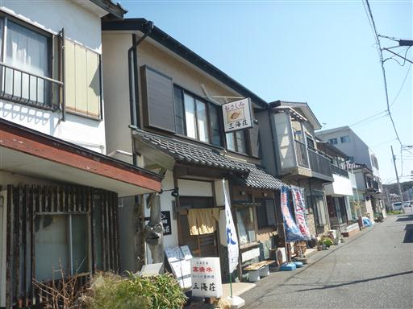
昼食をとったら観光開始。大きな駐車場に車を停める。
少々不便な場所にある駐車場だが、無料で停めることができる。
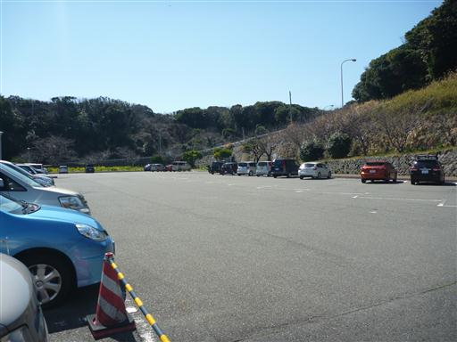
駐車場から続くトンネルを潜って南の海岸線に向かう。
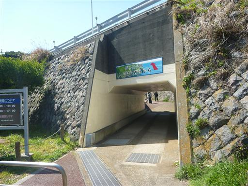
東にある城ヶ島公園は時間がないのでスキップ。
城ヶ島ハイキングコースを西に歩いていく。
開放感のある気持ちの良い遊歩道だ。
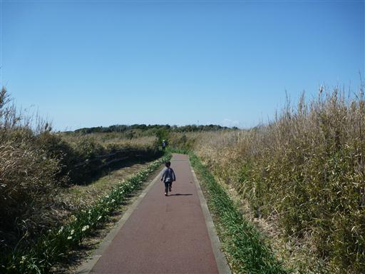
足元にはスイセンの花が植えられている。花はもうほとんど終わりかけだ。
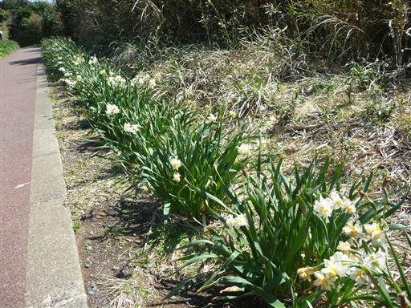
ウミウ展望台に到着。高さ30mの断崖が続く。
なだらかな草原から一気に海に切れ落ちている。素晴らしい景観だ。
人を寄せ付けない地形のため、ウミウの生息地になっている。
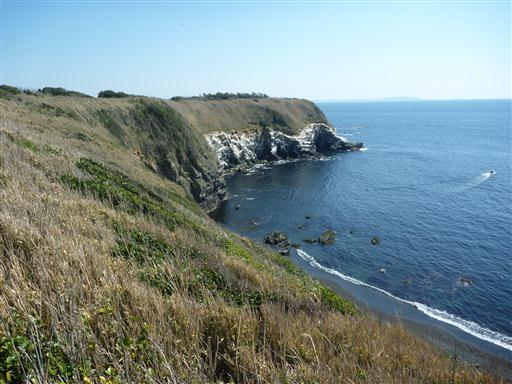
眼下の海は透明度が高そうだ。
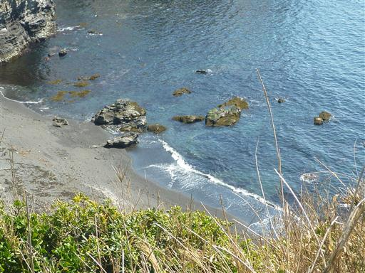
遊歩道を歩いていく。木が生い茂っているが、その隙間からチラチラと海が見える。
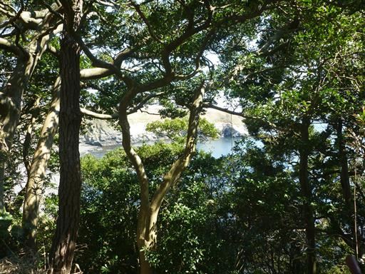
海岸ルートに続く階段を下りていく。
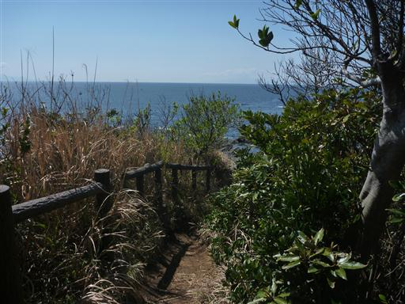
大きく景色が広がる。
断崖の先は砂浜、そして海岸は岩が露出している。
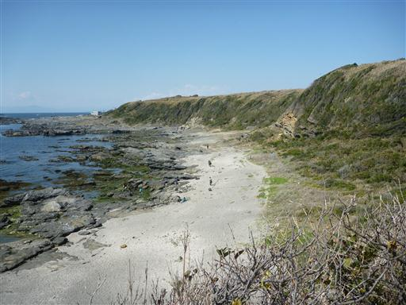
馬の背洞門を上から眺める。今にも崩れ落ちそうだ。
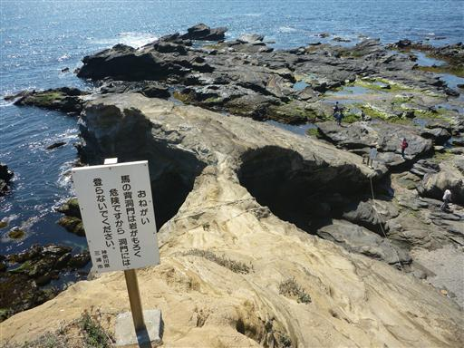
砂浜まで下りてくる。
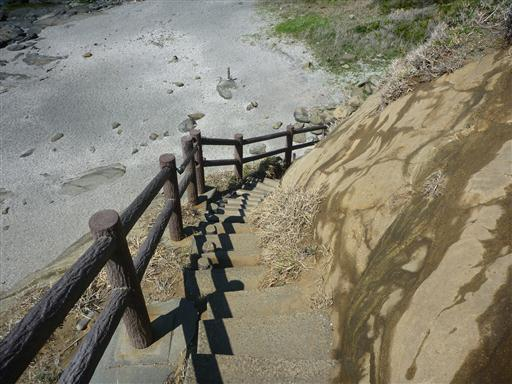
岩に空いた小さな穴。穴に入って先を覗いてみる。
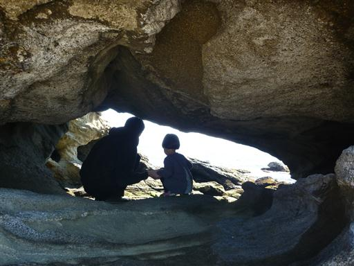
こちらが馬の背洞門。先ほどの穴よりはるかに大きな穴だ。
波や風雨に浸食されてできたらしい。
こちらは落石の危険があるため近づくことはできない。
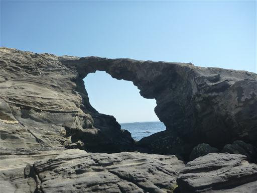
馬の背洞門周辺を散策する。
この辺りは浸食された岩が多く、複雑な地形になっている。
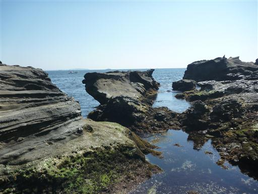
娘は岩の上を歩くのが楽しいらしく、かなりハイテンションで歩きまわっている。
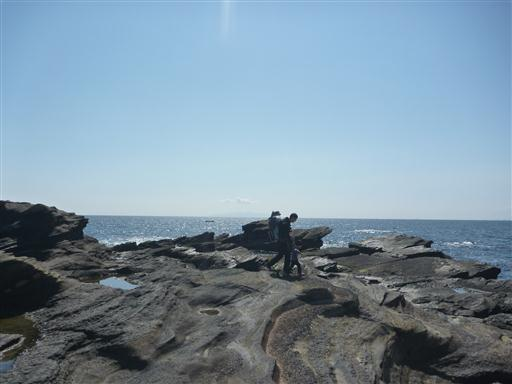
岩に激しく波が打ち付けている。
この波の力によって、この辺りの不思議な地形が出来上がったのだろう。
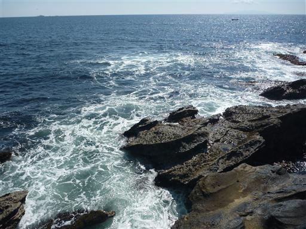
岩場の先端までやってくる。
その先になにやら人工物がありそうな岩があるが、行くことはできなさそうだ。
干潮時であれば行けるのだろうか？
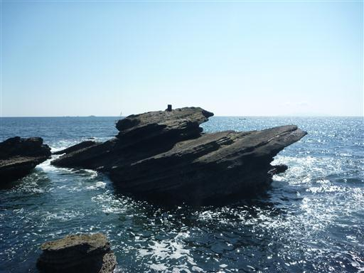
鬼の洗濯板のようなギザギザの地形が広がっている。
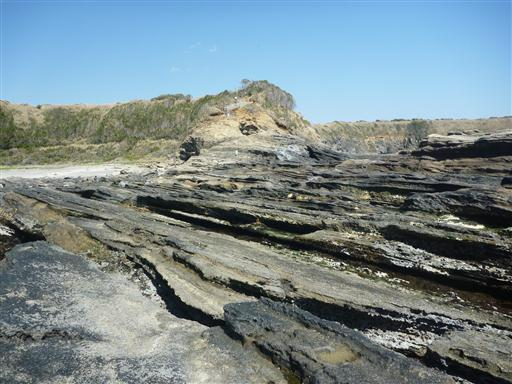
こちらは縞々の地層が良く分かる。なかなか興味深い地形が観察できる。
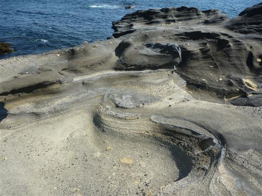
岩に囲まれた水たまり。非常にきれいな水だ。
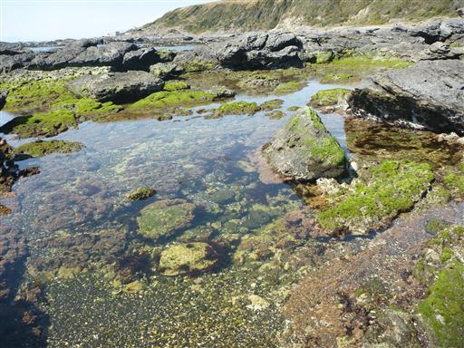
水の中に不思議な生き物がいる。アメフラシだろうか？
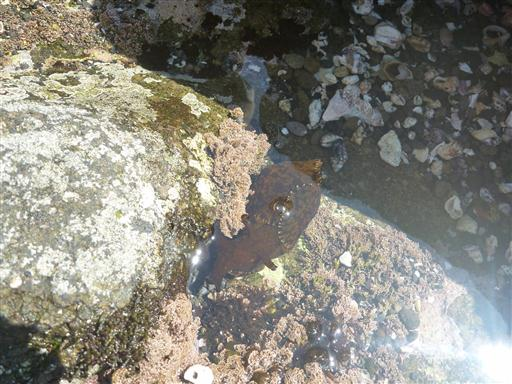
砂浜には無数の貝殻が散らばっている。
砕けたものが多いが、あちらこちら貝殻だらけだ。
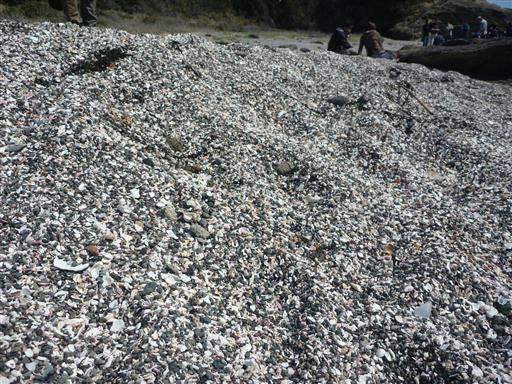
娘は貝殻拾いに熱中している。
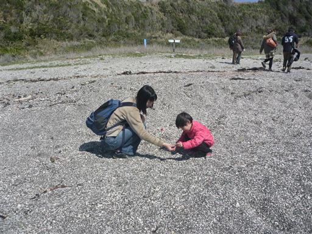
岩場を離れて砂浜を歩いていく。
不思議なことに貝殻があったのは特定の一角のみで、この辺りはほとんど貝殻が見当たらない。
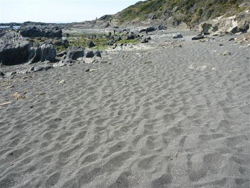
左手には広大な海が広がっている。
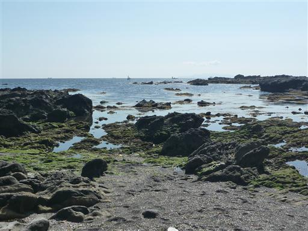
右手には岩壁が続いている。
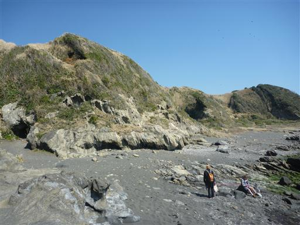
何を思ったのか突然、娘が岩壁を登りだす。
勝手に上へ上へ登っていくので、あわてて後を追いかける。まだまだ危なっかしい。
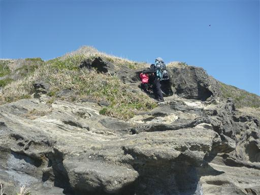
小さな入り江のそばの岩の上に腰を下ろしておやつタイムにする。
今日は比較的暖かく、風もあまりないので過ごしやすい。
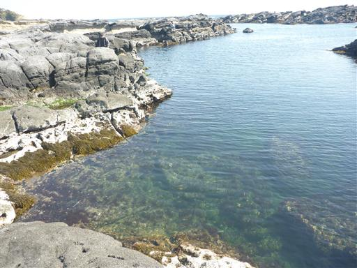
城ヶ島の西の端近くまで来たので、海岸から離れて階段を登っていく。
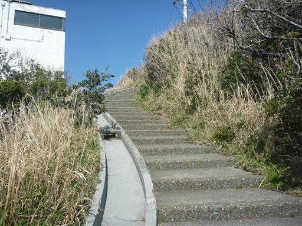
高台から望む海岸線。
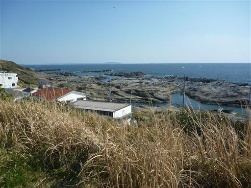
城ヶ島灯台。1925年に建てられた、かなり古い灯台だ。
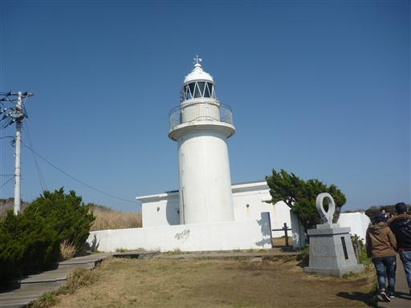
階段を下って行くと土産物屋が軒を連ねている。
古そうな商品が多いが、それなりの賑わいだ。
城ヶ島は思った以上に美しく、また楽しめる島だった。
機会があったらまた来ようと思う。
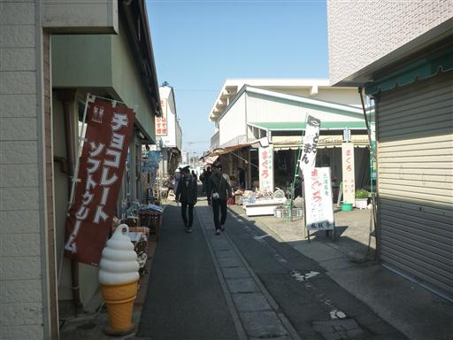